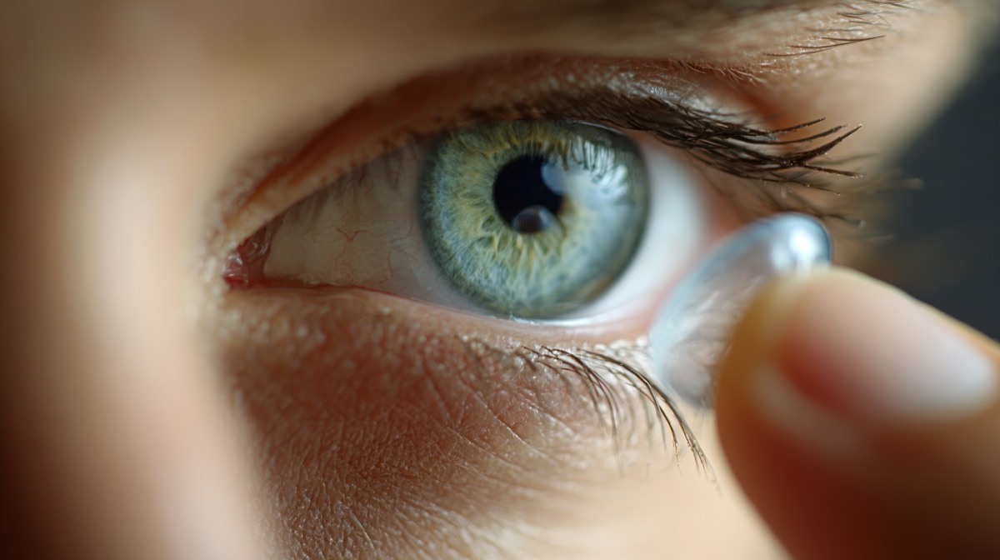
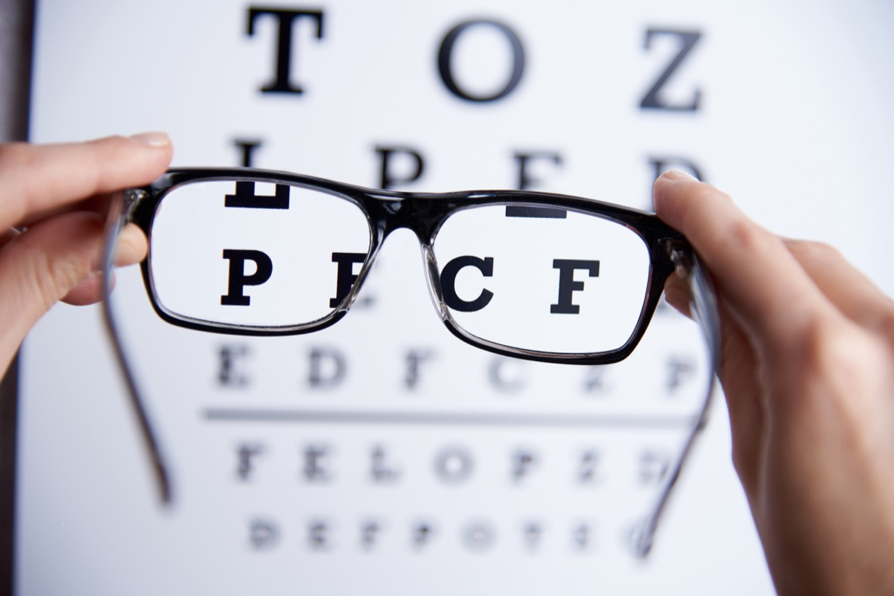

Eye examinations
Routine and advanced exams include vision testing, ocular health screening, and retinal imaging to detect early signs of glaucoma, cataracts and macular degeneration.
Vcare Opticals offers a comprehensive range of optometry services for all ages, combining professional care with a relaxed clinic experience. Our services are designed to help you maintain and improve your vision with solutions tailored to your needs.

Routine and advanced exams include vision testing, ocular health screening, and retinal imaging to detect early signs of glaucoma, cataracts and macular degeneration.

Choose from stylish frames and high-performance lenses, including specialist coatings and personalised fittings that suit your lifestyle and budget.

Expert fitting and follow‑up support for soft, toric, and multifocal lenses. We help you find the most comfortable option and teach proper lens care.
Manage dry eye, seasonal irritation, and chronic conditions with tailored treatment plans, including eyelid care, moisture therapy and lifestyle advice.
Our comprehensive annual eye checkup includes:
Regular eye exams are essential for maintaining optimal vision and overall health. They help detect vision problems early, allowing for timely treatment and prevention of more serious conditions.
Eat a balanced diet rich in antioxidants, wear sunglasses to protect against UV rays, take regular breaks from screens (20-20-20 rule), and schedule annual eye exams.
Contact lenses correct vision issues like nearsightedness and farsightedness. Types include soft, rigid gas permeable, and specialty lenses. Proper hygiene and care are crucial to prevent infections.
Consider your face shape: round faces suit angular frames, square faces benefit from rounder styles. Choose comfortable, lightweight materials and ensure frames fit well for optimal vision and comfort.
Clear, healthy vision plays a crucial role in how we work, learn, and experience the world around us. An Annual Eye Exam is one of the most important steps in maintaining long-term eye health and preventing potential vision loss.
Early Detection of Eye Conditions: Routine eye examinations allow optometrists to detect issues such as glaucoma, cataracts, or macular degeneration in their early stages often before symptoms appear. Early detection greatly improves treatment outcomes.
Prevention Through Regular Screening: Regular check-ups help prevent serious eye conditions caused by ageing, screen exposure, chronic diseases like diabetes, or lifestyle factors. Preventive care is essential for maintaining good vision over time.
Personalised Vision Guidance: Each patient’s lifestyle, work environment, and screen time affect their vision differently. Annual exams offer an opportunity to receive personalised advice on eye strain reduction, protective eyewear, and habits that support healthy vision.
Comprehensive Eye-Health Evaluation: Eye exams go beyond checking vision clarity they assess the health of the entire eye, including the retina, optic nerve, and cornea. This holistic approach helps detect systemic health problems such as diabetes or high blood pressure.
Supporting Long-Term Well-Being: Consistent eye care ensures you maintain optimal vision throughout all life stages. It supports productivity, comfort, confidence, and overall quality of life.
Overall, investing in an Annual Eye Exam is a powerful step toward protecting your vision for years to come. Schedule your exam today and enjoy the benefits of clear, healthy eyesight.
To learn more about what we offer and book a personalised appointment, use the contact form below.
Book an appointment